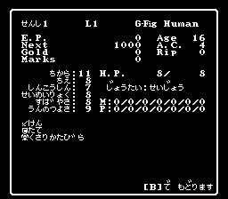
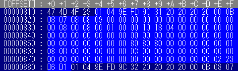

※ シリーズ共通説明 ※
1・クイックセーブファイルは訓練場に入った時に作った物を使用
2・セーブファイルはゲーム開始後即終了した物を使用
3・原則として初期化後のデータを使って調べています
（例 画像はSFC#1を使用）初期状態で訓練場一番目のキャラクターのステータス画像です
まあ、見たままです

（その初期状態のデータ詳細）反転している部分が1人目のデータ格納場所になっています
2人目はその下からですね
このデータ詳細を表にすると、次のようになります
OFFSET xxh 詳細 ゲーム内表記 備考 00000814 01 00000815 04 名前文字数フラグ 00000816 9E 名前1文字目 せ 文字リスト 00000817 FD 名前2文字目 ん 文字リスト 00000818 9C 名前3文字目 し 文字リスト 00000819 31 名前4文字目 １ 文字リスト 0000081A 20 名前5文字目 文字リスト 0000081B 20 名前6文字目 文字リスト 0000081C 20 名前7文字目 文字リスト 0000081D 20 名前8文字目 文字リスト 0000081E 00 種族 職業 性格 Hum-G-Fig 種族 職業 性格リスト 0000081F 0B 力 11 00000820 08 知恵 8 00000821 07 信仰心 7 00000822 08 生命力 8 00000823 08 素早さ 8 00000824 09 運の強さ 9 00000825 00 所持金 上位:千億 下位:百億 00000826 00 所持金 上位:十億 下位:億 00000827 00 所持金 上位:千万 下位:百万 00000828 00 所持金 上位:十万 下位:万 00000829 00 所持金 上位:千 下位:百 0000082A 00 所持金 0 上位:十 下位:一 0000082B 00 経験値 上位:千億 下位:百億 0000082C 00 経験値 上位:十億 下位:億 0000082D 00 経験値 上位:千万 下位:百万 0000082E 00 経験値 上位:十万 下位:万 0000082F 00 経験値 上位:千 下位:百 ※ OFFSET
バイナリエディタの時はOFFSETと呼び、プロセスエディタの時はADDRESSと呼びます
PS等でPARを使用した事がある方はADDRESSと言った方が解りやすいですかね。まあ番地の事です※ xxh
初期値を上から下に書いています
基本的に16進数での管理ですが、例外として赤字は10進数での管理です※ 詳細
調べた結果、判明したデータ管理部分です
※ ゲーム内表記
ゲーム内で確認出来ないものは空白です
※ 備考内のリスト
（このページではリンクを外しています）
アイテムリスト xx 0x 1x 2x 3x x0 ガラクタ 毒消しの薬 硬い杖 豪華な革鎧 x1 剣 切り裂きの剣 ドラゴンスレイヤー エルフの鎖帷子 x2 短剣 良い短剣 忍耐の兜 極上の鎧 x3 メイス 粉砕のメイス 腐った革鎧 支えの盾 x4 フレイル 鉄の杖 錆びた鎖帷子 悪の兜 x5 杖 眠りの巻物 罅割れた胸当て 回復の薬 上記のリストの場合、数値を該当管理場所に書き換えるとその効果が得られます
つまり、アイテム１個目種類の場所に[03]と書き換えるとメイス
[12]に書き換えると良い短剣
[35]に書き換えると回復の薬が得られます
Mag呪文習得リスト xx L1 L2 L3 L4 L5 L6 L7 +01 ハリト ディルト マハリト モーリス マモーリス ラカニト マロール +02 モグレフ ソピック モリト ダルト マカニト ジルワン マハマン +04 カティノ ラハリト マダルト マゾピック ティルトウェイト +08 デュマピック ハマン この様な、+xxが書かれたリストは、その数値を加算することで得られるデータになってます
Mag呪文L1だけに絞って書くと・・・
[01] →「ハリト」習得
[03] →01+02 なので「ハリト」「モグレフ」習得
[0F] →01+02+04+08 なので「ハリト」「モグレフ」「カティノ」「デュマピック」習得
16進数の計算が出来ない →とりあえず[FF]入れておけば全部習得
どれも見たら解ると思うのですが、、、とにかく経験です。実際触ってみればすぐに解るようになるはずです。
（説明が解りにくいとかはナシで。10進数から2進数や16進数の変換が出来ないと話にならないですし・・・）